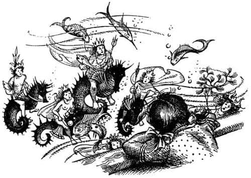
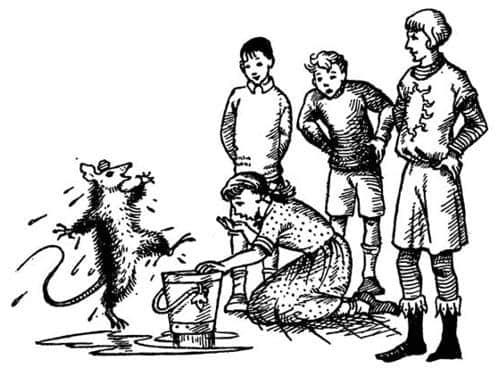

Son Denizin Harikaları
Ramandu’nun ülkesini terk ettikten kısa süre sonra artık dünyanın ötesinde yolculuk yaptıklarını hissettiler. Her şey farklıydı. İlk olarak herkes daha az uyuduğunu fark etti. Yatmak, yemek yemek ve hatta konuşmak bile istemiyorlardı. Bir başka şey de ışıktı. Çok fazla ışık vardı. Güneş her sabah doğduğunda, normal büyüklüğünün üç değilse bile iki misli görünüyordu. Her sabah (Lucy’ye kendini çok tuhaf hissettiren) büyük beyaz kuşlar, kimsenin bilmediği dildeki şarkılarını insan sesleriyle söyleyerek başlarının üzerinden uçup geçiyor, Aslan’ın Masası’ndaki kahvaltılarına doğru gemiden uzaklaşıp kayboluyorlardı.
“Su ne kadar berrak!” dedi Lucy kendi kendine, ikinci günün ikindisinde iskele tarafından eğilerek.
Gerçekten de öyleydi. Gözüne çarpan ilk şey, yaklaşık bir ayakkabı büyüklüğünde, gemiyle aynı hızda giden küçük siyah bir şeydi. Önce suyun üstünde yüzen bir şey sandı. Ardından aşçının mutfaktan fırlattığı bayat bir ekmek parçası göründü. Ekmek parçası siyah şeyle çarpışacakmış gibiydi ama çarpışmadı. Onun üzerinden geçti ve Lucy, siyah şeyin yüzeyde olmadığını anladı. Birden siyah şey kocaman oldu, ama kısa süre sonra tekrar normal büyüklüğüne döndü.
Lucy böyle bir şeyi başka bir yerde daha gördüğünü biliyordu, keşke nerede olduğunu hatırlayabilseydi. Hatırlamaya çalışmak için elini başına koydu, yüzünü buruşturdu ve dilini çıkardı. Sonunda hatırlamıştı. Elbette! Parlak ve güneşli bir günde trenden gördüğünüz şey gibiydi. Trende, tarlalar boyunca trenle aynı hızda giden, kendi vagonunuzun siyah gölgesini görürdünüz. Sonra bir boğaza girerdiniz ve aynı gölge süratle boğazdaki çimenlerin üzerine düşer ve büyürdü. Sonra boğazdan çıkardınız ve gölge yeniden normal büyüklüğüne dönmüş olur, tarlalar boyunca yoluna devam ederdi.
“Gölgemiz! Şafak Yıldızı’nın gölgesi” dedi Lucy. “Gölgemiz denizin dibinde bizi takip ediyor. Büyük göründüğü o an bir tepenin üzerinden geçtik. Fakat bu durumda, su düşündüğümden de berrak olmalı. Ne tuhaf, metrelerce aşağıyı, denizin dibini görüyor olmalıyım.”
Bunu söyler söylemez bir süredir seyretmekte olduğu o kocaman, gümüş rengi enginliğin deniz yatağındaki kum, gördüğü her türlü koyu ve açık şeklin yüzeydeki ışık ve gölgeler değil dipteki gerçek şeyler olduğunu anladı. Örneğin o anda, ortasından geniş ve açık gri bir şeridin dolandığı, mora çalan yeşil bir kütle üzerinden geçmekteydiler. Artık onun dipte olduğunu bildiğinden çok daha iyi görebiliyordu. Koyu renkli parçaların diğer parçalardan daha uzun olduğunu ve hafifçe dalgalandığını seçebiliyordu. “Tıpkı rüzgârda salınan ağaçlar gibi” dedi Lucy. “Bunun bir denizaltı ormanı olduğuna inanıyorum.”
Onun üzerinden geçtiler ve az sonra açık renkli şeride bir başka açık renkli şerit bağlandı. “Orada olsaydım” diye düşündü Lucy, “o şerit, ormanın içindeki bir yol ve diğerine bağlandığı şu yer kavşak olurdu. Ah, keşke orada olsaydım. Ne! Orman sona eriyor. Eminim o şerit gerçek bir yol! Açık kumun üzerinde devam ettiğini görebiliyorum. Değişik bir renk. Kenarlarında işaretler var, kesik çizgiler. Belki taştır. Şimdi genişliyor.”
Genişlemiyordu, sadece daha yakına geliyordu. Gemi gölgesinin hızla ona doğru yaklaşmasından anlamıştı. Yol – artık yol olduğuna emindi – zikzaklar çizmeye başladı. Dik bir yokuşa tırmandığı belliydi. Başını yana eğerek geriye baktığında gördüğü şey, bir tepenin üzerinden aşağıya, virajlı bir yola bakarken gördüklerine benziyordu. O derin, ormanlık vadiye düşen güneş ışıklarını ve çok uzakta her şeyin soluk bir yeşillikte kaybolduğunu görebiliyordu. Fakat bazı yerler – güneş alan yerler diye düşündü – koyu maviydi.
Geriye bakmak için zaman ayıramadı; ileride, görüş alanına girmekte olan şey çok heyecan vericiydi. Yol belli ki tepenin üzerine ulaşmıştı ve dosdoğru ileriye gidiyordu. Küçük noktacıklar yolun üzerinde ileri geri gidip geliyordu. Şimdi harika bir şey günışığında – fersahlarca suyun derinliğindeki bir şey ne kadar günışığında olabilirse – pırıl pırıl parlıyordu. Yumrular ve çentiklerle doluydu ve inci, hatta belki de fildişi rengindeydi. Tam üzerinde olduklarından neye benzediğini çıkaramamıştı. Ama gölgesini fark ettiğinde her şey açıklığa kavuştu. Günışığı Lucy’nin omuzlarının üzerinden geliyordu, bu yüzden o şeyin gölgesi kumlara yayılmıştı. Lucy o gölgenin kulelerin, minarelerin ve kubbelerin gölgesi olduğunu anladı.
“Hey! Bir şehir, ya da kocaman bir kale bu” dedi Lucy kendi kendine. “Neden böyle yüksek bir tepenin üzerine inşa etmişler acaba?”
Çok uzun süre sonra, Lucy İngiltere’ye geri döndüğünde ve tüm bu maceralar hakkında Edmund’la konuştuğunda, bunun nedenini düşündüler. Deniz derinlere inildikçe karanlıklaşır ve soğur; orada, aşağıda, o karanlıkta ve soğukta, mürekkepbalığı, denizyılanı ve deniz canavarı gibi tehlikeli canlılar yaşar. Sualtında vadiler vahşi ve korkutucu yerlerdir. Deniz İnsanları vadilerini, bizim dağları gördüğümüz gibi ve dağları da bizim vadileri gördüğümüz gibi görürler. Huzur ve sıcaklık yükseklerdedir (ya da bizim diyeceğimiz gibi “alçaklarda”). Deniz avcıları ve şövalyeleri macera aramak için derinlere iner ve dinlenip sakin zaman geçirmek için, toplantılara, spora, şarkılara ve danslara katılmak için yükseklere, evlerine dönerler.
Şehri geçmişlerdi ve deniz yatağı hâlâ yükseliyordu. Artık geminin sadece yüz metre kadar altındaydı. Yol kaybolmuştu. Parka benzeyen, canlı renkli bitkilerle kaplı küçük bahçelerin olduğu bir bölgenin üzerinden geçiyorlardı. Tam o sırada Lucy, heyecanla tiz bir çığlık koyuverdi; insanları görmüştü.
Sayıları on beş ile yirmi arasındaydı ve hepsi denizatlarına binmişlerdi, akvaryumlardaki o minik denizatlarına değil, kendilerinden oldukça büyük olanlara. Bunlar soylu ve gururlu insanlar olmalı diye düşündü Lucy, çünkü bazılarının alnındaki altınların parıltısını görebiliyordu ve omuzlarında yeşil ya da turuncu flamalar dalgalanmaktaydı. Sonra:
“Ah, balıklar!” dedi Lucy, Çünkü yüzeye oldukça yakın yüzen bir sürü küçük ve şişko balık Deniz İnsanlarıyla arasına girmişti. Bu olay, manzarayı bozsa da çok ilginç bir şeye yol açtı. Aniden küçük ve vahşi bir balık derinlerden yukarı fırladı, oraya buraya saldırdı ve ağzında şişko balıklardan biriyle çabucak dibe daldı. Deniz İnsanları atlarının üzerinde oturmuş olup biteni seyrediyorlardı. Konuşup eğleniyor gibi görünüyorlardı. Aynı türden başka bir balık Deniz İnsanlarının olduğu yerden yukarı doğru fırladı. Lucy, balığı, grubun ortasında denizatının üzerinde oturmakta olan iri deniz adamının gönderdiğine ya da serbest bıraktığına emindi; sanki o ana kadar balığı elinde tutuyormuş gibiydi.

“Hey, bence” dedi Lucy, “bu bir avcı grubu. Daha doğrusu, şahinle avlanan avcılar gibi. Evet öyle. Tıpkı bizim Cair Paravel’de şahinlerle ava çıkmamız gibi, onlar da o vahşi balıklarla ava çıkıyor, sonra balıkları uçuruyorlar – yüzdürüyorlar demek gerekir galiba – diğerlerini yakalamak için. Nasıl?..”
Aniden durdu, çünkü manzara değişiyordu. Deniz İnsanları Şafak Yıldızı’nı fark etmişti. Balık sürüsü her yöne dağıldı: İnsanlar, güneşle aralarına giren bu büyük ve siyah şeyin ne anlama geldiğini öğrenmek için yukarı geliyordu. Artık yüzeye öyle yakındılar ki, eğer suyun içinde olmasalardı Lucy onlarla konuşabilirdi. Kadınlı erkekli bir gruptu. Hepsi bir tür küçük taç takmıştı ve birçoğunun boynunda inci dizileri vardı. Başka bir şey giymiyorlardı. Vücutları fildişi rengi, saçlarıysa mordu. Ortadaki kral (kimse onun kraldan başka bir şey olduğunu düşünemezdi) gururla Lucy’nin yüzüne bakıp elindeki mızrağı vahşice salladı. Şövalyeleri de aynı şeyi yaptı. Kadınların yüzlerinden şaşkınlık okunuyordu. Lucy onların daha önce bir gemi ya da insan görmediğine emindi; hiçbir geminin gelmediği bu yerde böyle şeyleri nasıl görebilirlerdi ki?
“Neye bakıyorsun Lucy?” diye bir ses geldi yakından.
Lucy öyle dalmıştı ki ses onu irkiltti ve döndüğünde uzun süre küpeşteye yaslanmaktan dolayı kolunun uyuştuğunu fark etti. Drinian ve Edmund yanındaydı.
“Bakın” dedi.
İkisi Lucy’nin gösterdiklerine baktı. Sonra Drinian alçak bir sesle:
“Hemen arkanızı dönün Majesteleri. Evet böyle, sırtımız denize dönük olsun. Önemli bir şey konuşuyormuş gibi görünmeyin” dedi.
“Neden, sorun nedir?” dedi Lucy, Drinian’ın dediklerini yaparken.
“Bunları görmek tayfalar için iyi değil” dedi Drinian. “Adamlar deniz kadınlarına ya da denizaltı ülkesine âşık olup, gemiden atlayabilirler. Uzak denizlerde bu türden şeyler olduğunu duymuştum. Bu insanları görmek her zaman şanssızlıktır.”
“Ama biz onları tanıyorduk” dedi Lucy. “Eskiden Cair Paravel’de kardeşim Peter Muhteşem Kral’ken, yüzeye çıkıp taç giyme törenimizde şarkı söylemişlerdi.”
“Sanırım onlar değişik türdendi, Lucy” dedi Edmund. “Onlar denizaltında olduğu kadar karada da yaşayabiliyordu. Ben bunların yaşayamayacağı kanısındayım. Yapabilselerdi çoktan yüzeye çıkıp bize saldırmışlardı. Çok vahşi görünüyorlar.”
“Her neyse” diye başladı Drinian, ama o anda iki ses birden duyuldu. Birincisi cup sesiydi. Diğeri de silah güvertesinden, “Denize adam düştü” diye bağıran birinin sesi. Ondan sonra herkes koşuşturmaya başladı. Bazı denizciler yelkenleri indirmek üzere aceleyle yukarı tırmandı; diğerleri küreklere geçmek için aşağıya koşturdu ve geminin kıçında nöbette olan Rhince, denize düşen adamı alabilmek amacıyla dümeni sonuna kadar kırdı. Artık herkes denize düşenin tam anlamıyla bir adam olmadığını biliyordu. Bu, Bastıbacak’tı.
“Seni gidi fare!” dedi Drinian. “Geminin tüm diğer adamlarını bir araya koysan onun yarattığından daha fazla sorun yaratamaz. Girilecek bir delik varsa bulur girer. Pranga vurmalı, teknenin arkasına bağlamalı, bir adaya bırakmalı, bıyıklarını kesmeli onun. Kimse küçük canavarı görebiliyor mu?”
Tüm bunlar Drinian’ın Bastıbacak’ı sevmediği anlamına gelmiyordu. Tersine, onu çok severdi, onun için endişeleniyordu ve bu yüzden ona kızgındı; tıpkı, araba yolunda koştuğunuz zaman annenizin size bir yabancıdan daha fazla kızması gibi. Kuşkusuz kimse Bastıbacak’ın boğulmasından korkmuyordu çünkü mükemmel bir yüzücüydü; fakat suyun altında ne olduğunu bilen üçü, Deniz İnsanlarının elindeki o uzun ve zalim mızraklardan korkuyordu.
Birkaç dakika içinde Şafak Yıldızı geriye dönmüştü ve herkes sudaki siyah lekeyi, Bastıbacak’ı görebiliyordu. Büyük bir heyecanla konuşuyordu, ama ağzı suyla dolduğundan kimse ne söylediğini anlamıyordu.

“Çenesini kapatmazsak aşağıda olanları anlatacak” diye bağırdı Drinian. Bunu önlemek için kenara koştu ve gemicilere bağırırken bir iple kendini aşağı sarkıttı, “Tamam, tamam. Yerlerinize dönün. Sanırım yardım almadan bir fareyi çıkarabilirim.” Bastıbacak ipe tırmanmaya başladığında – pek çevik değildi çünkü ıslak tüyleri onu ağırlaştırmıştı – Drinian eğildi ve fısıldadı, “Tek kelime etme.”
Sırılsıklam fare güverteye çıktığında Deniz İnsanlarıyla ilgilenmediği ortaya çıktı.
“Tatlı!” diye bağırdı. “Tatlı, tatlı.”
“Neden bahsediyorsun sen?” diye sordu Drinian, tersleyerek. “Ayrıca tüm suyu üzerime sıçratmak zorunda değilsin.”
“Sana suyun tatlı olduğunu söylüyorum” dedi Fare. “Tatlı, tuzlu değil.”
Önce kimse bunun önemini anlayamadı. Ancak sonra Bastıbacak eski kehaneti bir kez daha tekrarladı.
“Dalgaların tatlı tatlı yükseldiği yerde
Şüphen olmasın, Bastıbacak
Oradadır mutlak doğu.”
Sonunda herkes anlamıştı.
“Bir kova ver bana Rynelf” dedi Drinian.
Kova verildi, Drinian kovayı indirdi ve yukarı çekti. İçindeki su cam gibi parlıyordu.
“Belki, önce Majesteleri tadına bakmak ister” dedi Drinian, Caspian’a.
Kral iki eliyle kovayı tutup kaldırdı, dudaklarına götürdü, bir yudum aldı ve sonra kana kana içerek başını kaldırdı. Yüzü değişmişti. Sadece gözleri değil her yeri parlıyordu.
“Evet” dedi, “tatlı. Bu gerçek bir tatlı su. Beni öldürüp öldürmeyeceğinden emin değilim. Fakat bir seçim hakkım olsaydı, seçeceğim ölüm bu olurdu.”
“Ne demek istiyorsun?” diye sordu Edmund.
“Bu – bu su sanki her şeyden daha hafif” dedi Caspian.
“Evet, bu doğru” dedi Bastıbacak. “İçilebilir hafiflikte. Dünyanın Sonu’nun yakınında olmalıyız.”
Bir an sessizlik oldu ve sonra Lucy diz çöküp kovadan su içti.
“Yaşamımda tattığım en harika şey” dedi soluk soluğa. “Ama çok sert, bir şey yemeye ihtiyacımız yok artık.”
Gemideki herkes sırayla suyu içti. Uzun bir süre hepsi sessizdi. Çok güçlü ve sağlıklı hissediyorlardı kendilerini. Az sonra içtikleri suyun başka bir etkisini fark etmeye başladılar. Daha önce de söylediğim gibi Ramandu’nun yaşadığı adayı terk ettiklerinden beri çok fazla aydınlık vardı; güneş çok büyük (ama çok sıcak değil), deniz çok parlak ve hava pırıl pırıldı. Şimdi, aydınlık azalmamıştı – tam tersine artmıştı – ama dayanılabilir hale gelmişti. Gözlerini kırpmadan dosdoğru güneşe bakabiliyorlardı. Hayat boyu gördüklerinden çok daha fazla ışık görebiliyorlardı. Güverte, yelkenler, yüzleri ve vücutları gittikçe parlaklaştı, halatlar da parlamaya başladı. Ertesi sabah, artık eski büyüklüğünün beş-altı katı olan güneş doğduğunda, dikkatle ona baktılar ve oradan uçarak gelen kuşların tüylerini gördüler.
Akşam yemeğine kadar tek kelime edilmemişti (kimse yemek yemek istemiyordu, su onlara yeterliydi). Drinian:
“Bunu anlayamıyorum. Hiç rüzgâr yok. Yelkenler ölü gibi sallanıyor. Deniz bir havuz gibi dümdüz. Fakat biz sanki arkamızda tayfun varmış gibi hızla ilerliyoruz” dedi.
“Bunu ben de düşünüyordum” dedi Caspian. “Güçlü bir akıntıya yakalanmış olmalıyız.”
“Hımm” dedi Edmund. “Eğer dünyanın gerçekten bir kenarı varsa ve biz de oraya yaklaşıyorsak bu pek iyi değil.”
“Yani” dedi Caspian, “hepimiz kenardan… şey, aşağıya mı döküleceğiz demek istiyorsun?”
“Evet, evet” dedi Bastıbacak, pençelerini çırparak. “Ben her zaman öyle sanmışımdır, dünya kocaman bir yuvarlak masa gibidir ve okyanusların suları kenardan aşağı dökülür. Gemi devrilecek, başının üzerine dikilecek, bir an için kenardan ötesini göreceğiz – ve sonra aşağıya, doğru aşağıya hızla iniş, son sürat—”
“Peki dipte bizi neler bekliyor söyleyebilir misin, ha?” dedi Drinian.
“Belki Aslan’ın ülkesi” dedi fare, gözleri parlayarak. “Belki de dibi yoktur. Belki sonsuza kadar aşağıya gidiyordur. Fakat ne olursa olsun bir an için dünyanın kenarından öteye bakmış olmak her şeye değmez mi?”
“Bana bak” dedi Eustace, “bunların hepsi palavra. Dünya yuvarlaktır, yani bir top gibi, yuvarlak masa gibi değil.”
“Bizim dünyamız öyle” dedi Edmund. “Peki, ya burası?”
“Yani” dedi Caspian, “siz üçünüz yuvarlak (top gibi yuvarlak) bir dünyadan geldiğinizi ve bana bundan hiç bahsetmediğinizi mi söylemek istiyorsunuz? Bu gerçekten çok kötü. Çünkü burada içinde yuvarlak dünyaların olduğu peri masalları var ve ben onları her zaman sevdim. Gerçek yuvarlak dünyaların olduğuna asla inanmadım. Hep olmasını arzuladım ve hep birinde yaşamayı istedim. Ah, her şeyimi verirdim. Siz bizim dünyamıza gelebiliyorsunuz da biz sizin dünyanıza neden gelemiyoruz acaba? Keşke bir fırsatım olsaydı! Top gibi bir şeyin üzerinde yaşamak heyecanlı olmalı. İnsanların baş üstü yürüdükleri yerlere gittiniz mi hiç?”
Edmund başını salladı. “Öyle değil” diye ekledi. “Orada yaşadığında yuvarlak dünyanın heyecan verici hiçbir yanı yok.”